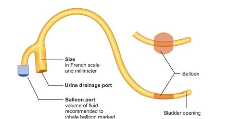

Le sondage urinaire est l'introduction d'une sonde dans la vessie via l'urètre, effectuée de manière atraumatique et aseptique pour éviter toute douleur ou complication. Il est utilisé pour soulager une rétention aiguë d'urine, drainer de manière permanente en cas de rétention chronique ou d'incontinence, ou à des fins thérapeutiques telles que le lavage ou l'instillation. Malgré sa perception comme un geste anodin, le sondage vésical peut entraîner des complications graves, notamment des infections urinaires nosocomiales et le syndrome de levée d'obstacle. Ces risques doivent être pris en compte lors de sa mise en œuvre.
L’urètre masculin présente naturellement à l’état de flaccidité une « courbe » au niveau de sa partie pénienne. Une autre « courbe » se retrouve au niveau de l’urètre bulbaire en dessous du sphincter strié et de la prostate. Ces « courbes », si elles ne sont pas « supprimées » par une préhension correcte de la verge lors du sondage sont sources de difficultés et de
traumatisme dont la conséquence la plus grave à distance est la sténose urétrale. Une des manières de s’affranchir de cette difficulté est de maintenir tout au long du sondage la verge au zénith . En effet, maintenir cette position de la verge tout au long du sondage permet de supprimer totalement la première « courbe » et d’offrir un trajet plus rectiligne à la sonde lors du passage de l’urètre bulbaire.
On distingue 4 types principaux de sondages réalisés par les voies naturelles :
• Sonde de Foley : Il s'agit d'une sonde urinaire à demeure, qui empêche le tube de glisser vers l'extérieur grâce à un ballon, qui peut être gonflé avec de l'eau stérile.
• Cathéter de Robinson : Il s'agit de cathéters généralement utilisés à court terme ou comme cathétérisme intermittent. Le cathéter est inséré à travers l’urètre jusque dans la vessie, puis il est retiré lorsque la vidange des urines est terminée.
• Sonde béquillée : Ce cathéter est conçu pour les cas où la négociation du cathéter est difficile dans l'urètre prostatique (prostate gonflée) ; la courbure vers le haut de l'extrémité du cathéter facilite le passage à travers la courbure naturelle de l'urètre prostatique.
• Sonde a hémostase prostatique : Il s'agit d'un cathéter à triple ou double lumière utilisé pour les patients ayant subi une TURP afin de contrôler l'hémostase, Il s'agit d'une variante du cathéter de Foley.
Le diamètre du cathéter est mesuré en unités françaises (Fr ou Ch). Le diamètre varie de 6 Fr à 22 Fr. Un code couleur à l'extrémité de l'entonnoir permet d'identifier facilement les différentes tailles de sondes de Foley.
Les sondes de Foley sont disponibles dans une longueur de 20 à 45 cm. La sonde d'une longueur d’environ 40 cm est utilisée pour les hommes adultes et les sondes de plus petite longueur (20-40 cm) sont utilisés chez les enfants et les femmes.
• Pointe droite : ce type de sonde de Foley est utilisé pour le cathétérisme normal, pointe est effilée pour passer en douceur dans l'urètre.
• Embout coudé : Ce type de sonde de Foley, dont l'extrémité est courbée, est utilisé dans les cas d'hypertrophie de la prostate ou d'urètre étroit.
• Embout olive : Utilisé chez les femmes.
Les cathéters urétraux étaient à l'origine fabriqués en caoutchouc de latex naturel et étaient sujets à l'infection, à la toxicité et à l'hypersensibilité. Le PTFE (polytétrafluoroéthylène) ne présente aucun avantage par rapport au cathéter en latex. Les deux types de cathéters, PTFE et latex peuvent être utilisés pour un cathétérisme à court (< 2 semaines) ou moyen (2 à 5 semaines) terme.
Le chlorure de polyvinyle et le polyéthylène sont recommandés pour la période postopératoire à court terme en raison de leur large lumière, qui facilite l'écoulement rapide de l'urine.
Pour le cathétérisme à long terme (> 6 semaines), les cathéters en silicone doivent être utilisés. Ces cathéters ont généralement une lumière plus large. Ils réduisent également l'urétrite et diminue les risques de rétrécissement urétral à long terme.
Choisir un matériel dont on a l’habitude, adapté aux besoins cliniques et en fonction de la durée prévisible du sondage. Choisir une sonde de diamètre aussi petit que possible ; un ballonnet de 10 ml est habituellement suffisant chez l’adulte ; en urologie un diamètre plus gros et un ballonnet de plus grande contenance sont recommandés.
Le sondage vésical en système clos est obligatoire, quelle que soit la durée prévisible du sondage.
Il correspond à l’assemblage de deux éléments qu’il ne faut jamais désunir :
• Sonde et collecteur stériles sont assemblés industriellement ou à défaut, par le soignant, avant la pose et retirés ensemble.
• Ils ne doivent jamais être déconnectés pendant la durée du sondage.
• Les prélèvements d’urines s’effectuent sur le site prévu à cet effet.
• La vidange du collecteur s’effectue aseptiquement uniquement par le robinet inférieur.
La sonde et le collecteur pré-connectés peuvent être soudés ou bagués (la présence d’une bague plastique intacte garantie que le système n’a jamais été déconnecté).
• Rétention urinaire
• Monitoring journalier du débit urinaire pour un bilan hydro-urinaire aux soins intensifs
• Monitoring per- ou postopératoire immédiat
• Post-chirurgie de la prostate, vessie ou chirurgie gynécologique
• Hématurie avec caillots sanguins Immobilisation prolongée (ex : AVC, fracture bassin)
• Incontinence urinaire sévère après échec de prise en charge pharmacologique ou chirurgicale
• Patients avec vessie neurogène ou atteinte de la moelle épinière
• Aide à la cicatrisation de plaies périnéales ou sacrées chez des patients incontinents
• Confort des patients en fin de vie
• Pratiquer une chimiothérapie intra vésicale.
• Le nitratage urétro-vésical : pour le traitement des cystites récidivantes.
Il y a deux contre-indications formelles :
• Rupture traumatique de l’urètre chez l’homme, associant des signes de rétention aigue d’urine et une urétrorragie ;
• L’urétrite aigue suppurante, car il y a un risque de propagation de l’infection à la vessie.
1. Infection urinaire : Bactériurie asymptomatique, CAUTI (Catheter-associatedurinary tract infection) et pyélonéphrite.
2. Syndrome de levée d’obstacle : L’obstruction des voies excrétrices induit des perturbations fonctionnelles rénales touchants l’hémodynamique rénale, la filtration glomérulaire et les fonctions tubulaires. Malgré la levée de l’obstacle, ces paramètres vont rester perturbés d’autant plus longtemps que l’obstruction aura été prolongée. Sur le plan thérapeutique, plusieurs schémas sont proposés. Le plus simple estd’apporter une base quotidienne de 4 l de sérum salé et de laisser le malade s’ajuster et éliminer la surcharge hydrosodée constituée au cours de la périoded’anurie. Cela nécessite une surveillance biologique et clinique étroite et adaptée de la volémie, du poids et du bilan entrées-sorties.
3. Syndrome d’hyperactivité vésicale : se traduisant cliniquement par une envie d’uriner et/ou une gêne dans la région sus-pubienne.
4. Rétrécissement iatrogène de l’urètre : toute manoeuvre traumatique entraîne une lésion de la muqueuse dont la cicatrisation « anarchique » peut être à l’origine de la sténose.
5. Hématurie à vacuo : En cas de vidange vésicale trop rapide. Il est conseillé de réaliser une vidange vésicale progressive et de clamper la sonde quelques minutes tous les 500 ml.
- Des compresses stériles
- Une solution antiseptique type Dakin, les ammoniums quaternaires sont proscrits car susceptibles d’irriter la muqueuse génitale
- Un champ stérile troué
- Gants stériles
- Sonde urinaire de taille adaptée
- Une seringue de gel de lidocaïne pour lubrifier l’urètre sur toute sa longueur et limiter la gêne ou la douleur ressentie par le patient lors du sondage.
- Une seringue d’eau stérile de 5 à 15 ml pour gonfler le ballonnet de la sonde selon les recommandations du fabricant. Le sérum physiologique ne doit pas être utilisé pour gonfler le ballonnet des patients Sondés A Demeure de Longue Durée (SAD-LD) devant le risque théorique de cristallisation de celui-ci et de ne plus pouvoir dégonfler le ballonnet.
- Un collecteur d’urine
• Le malade est prévenu du geste qui va être fait et rassuré.
• Dans la mesure du possible, il est préférable que la vessie soit pleine.
• Il est recommandé de choisir une sonde de diamètre aussi petit que possible.
• Réaliser une toilette genito-urinaire préalable au sondage avec un savon doux.
• Réaliser le système clos en adaptant la sonde au sac collecteur d’urines avant introduction de la sonde dans l’urètre [72] et clamper le tube d’évacuation du sac collecteur.
• Il est prudent d’utiliser systématiquement un produit de lubrification (lubrifiant ou gel anesthésique).
• Il est recommandé de remplir le ballonnet avec le volume minimal.
• Installer la patiente en position dorsale (si pas de contre-indications), jambes écartées
• Éventuellement glisser un bassin ou un coussin sous le siège
• La position latérale est une alternative chez des personnes très obèses
• Les grandes lèvres sont désinfectées de haut en bas à l’aide d’une compresse imbibée de solution Dakin ;
• Une autre compresse est ensuite passée sur les petites lèvres, après avoir écarté les grandes lèvres
• Les petites lèvres sont ensuite ouvertes en les maintenant d’une main, tandis qu’une troisième compresse est passée à l’intérieur ;
• Le méat urinaire est repéré et désinfecté.
Dans tous les cas la désinfection est pratiquée de l’avant vers l’arrière et chaque compresse n’est passée qu’une seule fois.
L’opérateur met ensuite des gants stériles et recouvre la surface périnéale avec un champ stérile fendu, à travers lequel seuls les orifices du vagin et de l’urètre restent visibles.
Les manœuvres urologiques du bas appareil urinaire sont peu douloureuses chez la femme. L’éventuelle anesthésie préalable ne nécessite que des quantités peu importantes de gel. On enduit le méat de quelques gouttes de Xylocaïne gel et on en injecte une petite quantité dans l’urètre.
La sonde urinaire est saisie avec une compresse sans toucher à ses extrémités. Il est important de découvrir l’orifice urétral et de s’assurer un éclairage correct. La sonde est introduite doucement, béquille en l’air. Elle est enfoncée de 4 à 5 cm environ (sans jamais forcer). En cas de faute d’asepsie ou de fausse route (sonde dans le vagin), changer impérativement tout le système clos. L’urine s’écoule dès que la sonde est dans la vessie.
Maintenir la sonde avec la main stérile et remplir le ballonnet avec la quantité d’eau stérile prévue. Retirer délicatement la sonde jusqu’à ce que le ballonnet bute contre le sphincter vésical.
La position adéquate pour le cathétérisme est le décubitus dorsal, les genoux fléchis et écartés cette manœuvre permet de détendre la vessie et l'urètre.
Le méat, le gland le sillon balano-préputial et la verge sont désinfectés par unbadigeonnage soigneux réalisé de l’avant vers l’arrière, à l’aide de compresses stériles imbibées de soluté de Dakin. Le gland est ensuite tenu avec une compresse stérile tandis que la base de la verge, le scrotum et la région pubienne sont désinfectés.
L’opérateur enfile des gants stériles et place un champ stérile troué en passant la verge en son centre.
Mettre du gel stérile en instillation dans le méat urinaire, d’abord quelques gouttes sur l’entrée de l’urètre ensuite introduire doucement l’embout de la seringue dans le méat et injecter (2-3ml). Respecter 3-5 minutes pour que l’anesthésie locale puisse agir.
Dans un premier temps, l'opérateur qui s'est placé à la droite du patient (s'il est droitier) tend la verge de la main gauche et la maintient au Zénith en exerçant une légère traction. De l'autre main, la sonde est introduite doucement dans le méat et enfoncée sans jamais forcer.
Dans un deuxième temps, l'opérateur ressent une certaine résistance (coudure périnéale de l'urètre) et la verge est abaissée et tendue à l’horizontale en augmentant la traction. La sonde arrive alors au niveau du sphincter strié qui est franchi en exerçant une pression un peu plus soutenue et en demandant au malade de se détendre.
Un léger ressaut signifie que le col vésical est franchi, en même temps qu'un écoulement d'urine à l'extrémité de la sonde signe la bonne position de celle-ci.
Il faut être certain du bon positionnement de la sonde dans la vessie avant de remplir le ballonnet. Il suffit pour cela de l'enfoncer de quelques centimètres supplémentaires après qu'on ait obtenu un flux urinaire franc. Lorsque le ballonnet est gonflé, on s'assure que la sonde glisse facilement par un mouvement de va-et-vient et que le ballonnet vient bien buter sur le col vésical.
Après le sondage ne pas oublier de remettre le prépuce (car risque de paraphimosis).
Pour éviter les tractions qui entraînent des lésions des muqueuses et une augmentation du risque infectieux.
- Chez la femme : fixer la sonde sur la cuisse
- Chez l'homme : fixer la sonde au niveau de l'abdomen ou sur la cuisse si le sujet est valide.
Veiller à ce que la sonde ne passe pas sous la cuisse du patient afin de prévenir la formation d’escarre.
Procéder à un lavage simple ou friction hydroalcoolique des mains avant et après vidange du système ou soins au patient. Respecter le port de gants car les contacts avec un liquide biologique sont possibles (précautions standards).
Utiliser une compresse avec un antiseptique pour la manipulation du système. Respecter le port de gants car les contacts avec un liquide biologique sont possibles (précautions standards)
- Certains proposent une vidange toutes les 8 heures, la logique veut, en tout cas, qu'on le fasse lorsque la poche est au 3/4 pleine.
- Penser à vidanger la poche avant un transport du malade en opérant exclusivement par le robinet de vidange. La déconnexion est formellement interdite.
• Ils comportent :
- Le lavage des mains avant et après chaque soin,
- La réalisation d’une toilette 1 fois/jour et au minimum après chaque selle,
- L’utilisation d’un savon doux liquide,
- Le respect de règles lors de la toilette : chez l’homme il est important de décalotter, chez la femme la région périnéale se nettoie du haut vers le bas.
• Ils permettent de contrôler :
– La température du malade,
– L’apport hydrique du patient,
– La fixation de la sonde vésicale sur l’abdomen chez l’homme et sur la cuisse chez la femme,
– L’absence de coude sur la sonde vésicale et sur le tube collecteur,
– Le maintien du sac collecteur en dessous du niveau de la cuisse,
– Le niveau de remplissage du sac collecteur,
– La présence et l’utilisation d’un support du sac collecteur (fixé au lit du patient), évitant que la poche ne soit posée à même le sol.
• Changement du matériel :
Les indications de ces changements peuvent être :
– La limite d'utilisation d'une sonde,
– La présence d'une obstruction à l'écoulement des urines,
– L'endommagement de la poche ou encore la présence d'urines troubles ou malodorantes,
– La présence d’une infection.
Il n'y a pas d'indication en routine de changement du matériel. Dans ces cas de changement, il est impératif de renouveler l'ensemble du système de drainage (sonde + sac collecteur).